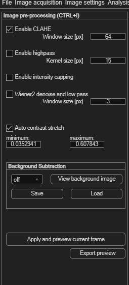

Image pre-processing
Pre-processing filters clean up your images before the cross-correlation runs, so PIVlab can find particles more reliably. They don't change your original image files — they're applied on the fly whenever an image is analysed or previewed.
Opening the panel
Choose Image settings → Image pre-processing / enhancement (Ctrl+I). Every filter here has its own tool tip — hover over a checkbox or field for a short explanation.
Two filters are enabled by default: Enable CLAHE and Auto contrast stretch. For most datasets these two are all you need; the rest exist for specific, less common problems.

CLAHE (recommended, on by default)
Enable CLAHE — Contrast Limited Adaptive Histogram Equalization — locally boosts contrast across the image, which generally makes particles easier for the correlation to distinguish. Window size [px] (default 64) sets the tile size CLAHE works on; the default is fine in most cases.
Filters for special cases (off by default)
These address specific image problems. Leave them off unless you have a concrete reason to turn one on:
| Filter | Parameter | What it's for |
|---|---|---|
| Enable highpass | Kernel size [px] (default 15) | Subtracts a low-pass (blurred) version of the image from itself, removing slow background brightness variations while keeping fine particle detail. |
| Enable intensity capping | — | Caps very bright pixels (e.g. reflections or glare) so a few extreme values don't dominate the correlation. |
| Wiener2 denoise and low pass | Window size [px] (default 15) | Wiener denoising followed by a Gaussian low-pass — reduces sensor noise in low-quality or noisy images. |
Auto contrast stretch (recommended, on by default)
Auto contrast stretch automatically stretches the image's intensity histogram between a minimum and maximum value. This matters most for 16-bit images, whose useful intensity range is often only a small slice of the full range — without stretching, the image can look almost blank. The two fields show the detected bounds (0–1 scale) and update automatically.
Background subtraction
The Background Subtraction panel computes one background image from your whole loaded sequence and subtracts it from every frame — useful for removing a static, unwanted structure (a fixed reflection, a stationary object's outline) that would otherwise interfere with the correlation.
| Control | Effect |
|---|---|
| Dropdown: off / subtract average intensity / subtract minimum intensity | Chooses whether to build the background from the average or the minimum intensity across all loaded images, or to disable subtraction. |
| View background image | Displays the computed background; click again to toggle between the A and B background. |
| Save / Load | Save the computed background image to reuse later, or load one you saved previously. |
Applying your changes
- Enable and configure the filters you want.
- Click Apply and preview current frame to see the result on the frame currently shown. This is only a preview — but the same filter settings are automatically applied to every frame in the session once you run the PIV analysis, so you don't need to repeat this per frame.
- Optionally, click Export preview to save the pre-processed image currently shown (use the Toggle button in the Tools panel to switch between image A and B first).
Tips & tricks: preprocessing isn't a fix-all
- Start simple. Leave the defaults (CLAHE + Auto contrast stretch) enabled and run a quick test analysis before reaching for anything else.
- Change one filter at a time. Enabling several at once makes it hard to tell which one actually helped — or hurt.
- Always compare processed vs. unprocessed. Use Apply and preview current frame to see the effect before committing, rather than assuming more filtering is better.